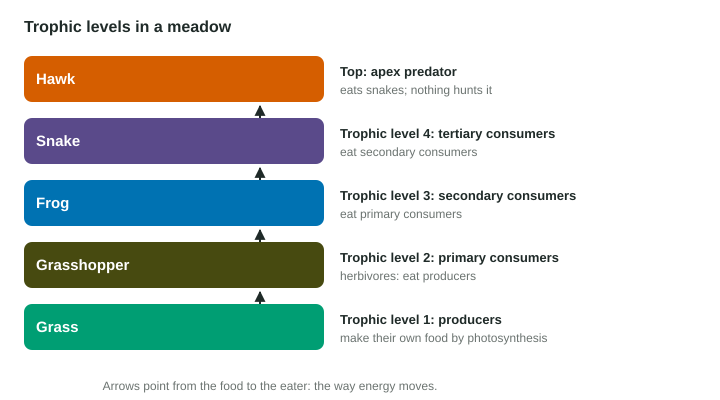

Trophic Levels
Trophic levels sort organisms by how they get energy.
Part 1 · Hook
Why this matters
Part 2 · Before you start
What this builds on
Part 3 · Prerequisite check
Quick check before you start
1. What is a producer?
- An organism that makes its own food from light
- An animal that eats plants
- A decomposer
- A predator
Show the answer
Producers photosynthesize.
- Correct: An organism that makes its own food from light:
- An animal that eats plants:
- A decomposer:
- A predator:
2. What is predation?
- One organism kills and eats another
- Two species both benefit
- One species lives on another without harming it
- Two species share a resource
Show the answer
Predation is +/−.
- Correct: One organism kills and eats another:
- Two species both benefit:
- One species lives on another without harming it:
- Two species share a resource:
Part 4 · See it
See it first

Part 5 · Step by step
How it works, step by step
- Producers capture energy from sunlightthey form trophic level 1
- Primary consumers (herbivores) eat producersthey form level 2
- Secondary and tertiary consumers eat the level belowthey form levels 3 and 4, up to an apex predator
Part 6 · Key ideas
Key ideas
- A trophic level is an organism’s position in the feeding sequence: producers are 1, primary consumers 2, secondary 3, tertiary 4.
- Herbivores eat producers; carnivores eat animals; omnivores eat both and feed at more than one level.
- An apex predator is at the top with no natural predators as an adult.
- Arrows point from food to eater, the direction energy moves.
Part 7 · Misconception
A common mistake
The wrong idea: Arrows in a food diagram point from the predator to what it eats.
What actually happens: Arrows show where the energy goes: from the food to the eater. Grass → grasshopper means the grasshopper eats the grass.
Part 8 · Check yourself
Check yourself
Exam-style questions. Anything you miss goes into your review queue.
1. A grasshopper eats grass, a mouse eats the grasshopper, and an owl eats the mouse. What is the mouse?
- A secondary consumer
- A primary consumer
- A producer of food
- A tertiary consumer
Show the answer
Grass (producer) → grasshopper (primary consumer) → mouse (secondary consumer) → owl (tertiary consumer).
- Correct: A secondary consumer: Right: it eats a primary consumer.
- A primary consumer: The grasshopper is the primary consumer.
- A producer of food: The grass is the producer.
- A tertiary consumer: The owl is the tertiary consumer.
2. In a trophic diagram, which way do the arrows point?
- From the food to the eater
- From the eater back to its food
- From the top predator down to producers
- From decomposers up to the producers
Show the answer
Arrows show the direction energy moves: from the food to the eater.
- Correct: From the food to the eater: Right: energy flows from food to eater.
- From the eater back to its food: That is backwards; arrows follow energy.
- From the top predator down to producers: Energy moves up from producers, not down.
- From decomposers up to the producers: Decomposers return nutrients, but trophic arrows show who eats whom.
Passage
Wolves return to a valley
After wolves were brought back to a mountain valley, park staff noticed changes beyond the wolves themselves. Elk, the wolves’ main prey, became fewer and spent less time browsing in open riverbanks, where they were easy to catch. Willow shrubs along the river, which elk had been eating down to stubs, grew taller. A ranger argues that the wolves helped the willows, even though wolves never eat plants. A visiting scientist cautions that a run of wetter years also helped the willows grow, so the wolves may deserve only part of the credit.
Invented passage for practice, loosely based on reports from western North America.
3. What is the ranger’s claim?
- Wolves helped willows by cutting elk browsing.
- Wolves eat willow shrubs when elk are scarce.
- Wetter years were the one reason willows grew.
- Elk became more common after wolves returned.
Show the answer
The ranger says the wolves helped the willows even though wolves do not eat plants: by reducing elk and their browsing.
- Correct: Wolves helped willows by cutting elk browsing.: Right: an indirect effect through elk.
- Wolves eat willow shrubs when elk are scarce.: The passage says wolves never eat plants.
- Wetter years were the one reason willows grew.: That is closer to the scientist’s caution, and the scientist said "also".
- Elk became more common after wolves returned.: The passage says elk became fewer.
4. Why does the scientist say the wolves "may deserve only part of the credit"?
- Wetter years could also explain it.
- Wolves in the valley do not eat elk.
- The willows did not actually grow taller.
- Elk eat wolves when the wolves are young.
Show the answer
Two changes happened at once, so the willows’ growth cannot be pinned on wolves alone.
- Correct: Wetter years could also explain it.: Right: another cause may share the credit.
- Wolves in the valley do not eat elk.: The passage says elk are the wolves’ main prey.
- The willows did not actually grow taller.: The passage says the willows grew taller.
- Elk eat wolves when the wolves are young.: Nothing in the passage says that.
5. What trophic level are the willows?
- Producers (level 1)
- Primary consumers (level 2)
- Secondary consumers (level 3)
- Apex predators
Show the answer
Willows photosynthesize, so they are producers.
- Correct: Producers (level 1): Right: willows are plants.
- Primary consumers (level 2): Elk, which eat willows, are primary consumers.
- Secondary consumers (level 3): Wolves eat elk, which puts them at level 3 or higher.
- Apex predators: Wolves are the apex predator here.
Data
Animals in a pond and what they eat
| Animal | Main foods |
|---|---|
| Tadpole | algae |
| Water flea | algae |
| Dragonfly larva | water fleas, tadpoles |
| Sunfish | dragonfly larvae, water fleas |
| Heron | sunfish, frogs |
6. Which animals in the table are primary consumers?
- Tadpoles and water fleas
- Dragonfly larvae and sunfish
- Sunfish and herons
- Herons and tadpoles
Show the answer
Both eat algae, a producer.
- Correct: Tadpoles and water fleas: Right: they eat algae.
- Dragonfly larvae and sunfish: Both eat animals, so they are above level 2.
- Sunfish and herons: Both eat animals, so they are above level 2.
- Herons and tadpoles: Herons eat animals; only the tadpoles are primary consumers.
7. Sunfish eat dragonfly larvae and also water fleas. What does this tell you about the sunfish?
- It feeds at two trophic levels.
- It is a producer that also eats animals.
- It feeds on primary consumers alone.
- It is a primary consumer, like a tadpole.
Show the answer
Water fleas are primary consumers (so eating them puts sunfish at level 3) and dragonfly larvae are secondary consumers (so eating them puts sunfish at level 4).
- Correct: It feeds at two trophic levels.: Right: levels 3 and 4.
- It is a producer that also eats animals.: Sunfish eat animals; they do not photosynthesize.
- It feeds on primary consumers alone.: Dragonfly larvae are secondary consumers.
- It is a primary consumer, like a tadpole.: Sunfish do not eat algae.
Part 9 · Summary
Summary
Part 10 · Up next
What comes next
Part 11 · Connections